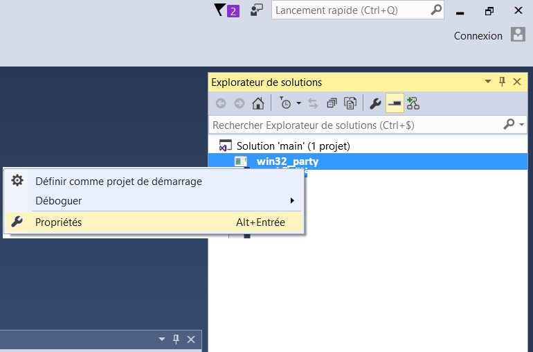

Explication
Pour obtenir une meilleure flexibilitée dans la compilation,
ansi que de permettre l'utilisation d'un éditeur de code externe,
mais aussi d'autres raisons
*cough* *cough* Vusial Studio Crash *cough* *cough*,
nous allons voir comment former notre prope environement de développement.
Notez que c'est la façon dont JE le fais.
Vous n'êtes pas obligé de tout suivre à la lettre.
Le faux disque dur
Le chemin vers un dique dur est très court: "C:/" ou encore "D:/".
Un truc que j'aime faire c'est prendre le dossier dans lequel
je vais faire mon développement et lui attribuer une lettre:
pour celà existe la commande "subst":
Dans mon cas, ce sera subst W: "D:\Party Junkie".
Pour ceux qui ne savent pas ouvrir une invite de commande:
- Appuyer sur les touches: Windows+R
- Taper: cmd
- Appuyer sur Entrer
- ????
- PROFIT!!!
L'éditeur de code
Comme éditeur de code, je vais utiliser
Emacs
dont le fichier de configuration sera mis à disposition.
Mais strictement rien ne vous empêche d'utiliser un autre éditeur,
ou encore d'utiliser visual studio commme éditeur de code.
//NOTE(doc):
// mkdir misc
// cp .emacs
Créer des dossiers
cd w:
mkdir misc
mkdir code
mkdir build
mkdir data
//TODO(doc): fix google coloartion code to include batch
win32_party.cpp
Dans le dossier W:/code/, je crée un fichier "win32_party.cpp" contenant
le code minimal pour faire un éxécutable.
#include <windows.h>
int CALLBACK
WinMain(HINSTANCE Instance,
HINSTANCE PrevInstance,
LPSTR CmdLine,
int CmdShow)
{
return(0);
}
//TODO(doc): fix google coloration code to include windows specific stuff
La compilation p1
La méthode que je vais présenter choque et horifie absoluement tous
les dévelopeurs, et je m'en excuse.
Mais vous savez quoi ? C'est comme ça que je build mes trucs et je ne vais
pas changer de méthode.
A la base de mon project je crée un "build.bat".

Un .bat est un fichier de script sous windows qui peut faire ce que
l'invite de commande peut faire.
Pour l'info, la plupart des développeurs utilise un make-system ou
build-system, tel que
GNU make,
Ninja ou encore
CMake.
Et genéralement les développeurs aiment utiliser des outils de build,
lançant des outils de build, des outils de build lançant
des outils de build, eux même lançant des scripts,
lançant d'autres outils de build; et avec tout ça
des outils d'analyse d'outils de build pour lancer
des outils d'optimisation des outils de build, ainsi que
des outils d'optimisation d'outils d'optimisation des outils de build,
et toute cette folie...
Et ils aiment ça.

La raison pour laquelle je ne le fais plus c'est que l'on
fini par passer beaucoup de temps à parametrer ces outils,
et beaucoup moins à programmer.
La raison pour laquelle les programmeurs utilisent ce genre d'outils
est de faire un sorte de compiler que les parities du code necessaire,
et donc éviter de recompiler tout le projet (plus le projet est gros,
plus il prend du temps à compiler).
Mais, pour avoir compilé de gros projets (plus gros que ce que je vais
faire dans cette projet (0.5 Go de code en C++)), compiler sans ces
outils ne prends jamais plus de 5 secondes.
L'invite de commande
Le compilateur C++ de Microsoft est "cl.exe".
Mais même après avoir installé Visual Studio, vous ne pourrez pas
l'appeller depuis l'invite de commande.
La raison pour laquelle vous ne pouvez pas l'apellé c'est
que le chemin jusqu'à cet executable n'est pas dans la variable
d'environement 'path' (vous pouvez taper "set" dans la cmd pour
avoir la liste de ces variables d'environnement).
Pour corriger ça (ainsi que mettre en place d'autres choses),
l'équipe de développement de Visual Studio nous a déjà fait un .bat
que l'on peut utilisé et qui a été téléchargé avec Visual Studio.
Il se situe généralement à
"C:\Program Files (x86)\Microsoft Visual Studio 14.0\VC\vcvarsall.bat".
Verifiez bien que ce fichier existe.
En batch (le language de scripting de la cmd), call permet d'appeler
un autre .bat.
Pour éviter de devoir relancer vcvarsall.bat plusieurs fois,
on va créer un shell.bat (à la racine de notre projet)
qui s'occupera de celà ainsi que tout ce qu'on voudra éxécuter avant
de commencer notre session de programmation.
@echo off
subst W: "D:\Party Junkie"
call "C:\Program Files (x86)\Microsoft Visual Studio 14.0\VC\vcvarsall.bat" x64
set path=W:\misc\;%path%
Le "x64" spécifie à vcvarsall.bat de tout mettre en place pour une compilation
en 64bits ("x86 spécifie une compilation 32bits).
On en profite pour modifier la variable "path" pour y ajouter notre dossier,
au cas où l'on voudrais y ajouter nous outils, etc.
Pour aller un pas plus loin, on va créer un racourci lançant notre invite de
commande déjà toute prête à être utilisée:
- Click droit
- Nouveau racourci
- %windir%\system32\cmd.exe /k W:\misc\shell.bat
Voilà !
Maintenant, si voys double clickez sur ce racourci,
une invite de commande va s'ouvrir.
Tapez "cl".
Miracle, on peut appeler le compilateur !
L'editeur
Dans le dossier W:/misc, je vais créer un "emacs.bat" qui lancera
mon éditeur de code (Emacs), cette étape est optinionelle.
@echo off
D:\emacs\bin\runemacs.exe -q -l W:\misc\.emacs
Le debugeur
Nous avons de la chance, vcvarsall.bat met un certain nombre de choses
en place pour nous faciliter l'utilisation des outils de développement.
Taper "devenv" permet de lancer Visual studio.
Taper "devenv un_executable.exe" (ou un_executable.exe est le chemin d'un
vrai fichier .exe) lance VS déjà prêt à débuger cet executable.
La compilation p2
Nous pouvons revenir sur notre build.bat.
La premiére ligne de ce build.bat est la suivante:
@echo off
mkdir ..\build
pushd ..\build
cl ..\code\win32_party.cpp
popd
"echo off" dis à la cmd de ne pas afficher la commande avant de
l'éxécuter; et le @ avant de ne pas afficher "echo off" avant de l'éxécuter.
"mkdir" permet de créer un dossier.
"pushd" permet de se déplacer dans un dossier de façon à pouvoir revenir
au dossier où l'on était à l'origine avec "popd".
Ce fichier "build.bat" va être la seule et unique façon dont on va compiler
notre programme.
Ce fichier va surement évoluer au fur et à meusure, mais ne sera jamais plus
compliqué que ce qu'il est actuellement.
La compilation p3
En parlant d'évolution, la toute premiére évolution va être de rajouter
le switch Zi qui permet d'activer la génération d'info pour le débeugeur
de VS.
@echo off
mkdir ..\build
pushd ..\build
cl -Zi ..\code\win32_party.cpp
popd
A ce niveau, nous pouvons compiler(taper build).
Et taper "devenv win32_party.exe" pour lancer le débugeur.
Visual Studio ce lance avec comme seul objet dans l'explorateur de solution
notre .exe.

Click droit "Propriétés".
Modifiez "Répertoire de travail" pour pointer vers "W:\data\".
On peut maintenant appuyer sur F11, qui veut dire
"Lance le programme et fait pause dès que t'arrive au main.".
Nous faisons ça pour forcer VS à trouver le fichier du code source.
A ce niveau, nous pouvons fermer VS et l'autoriser à enregistrer son fichier
.sln.
Et voilà c'est tout.